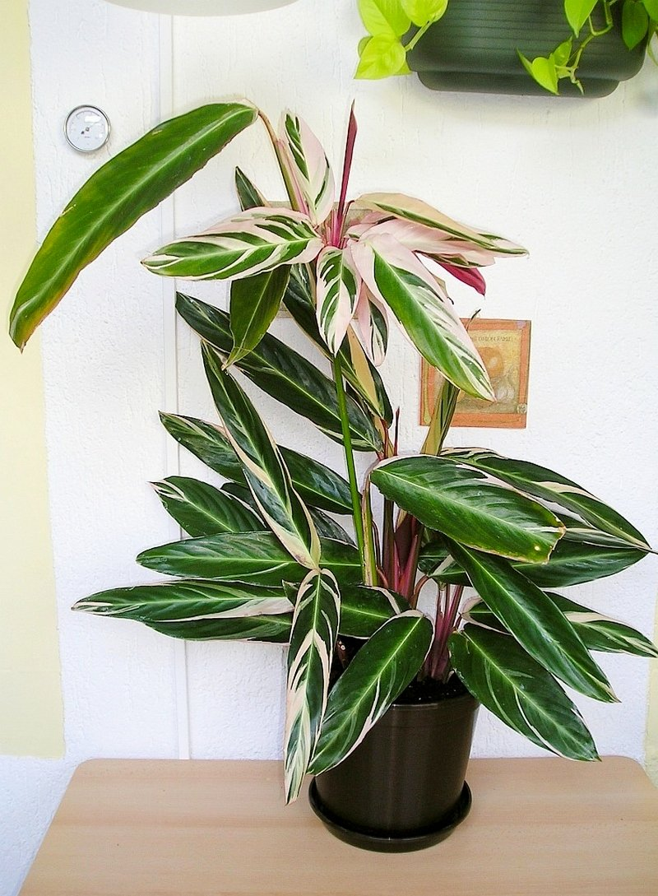
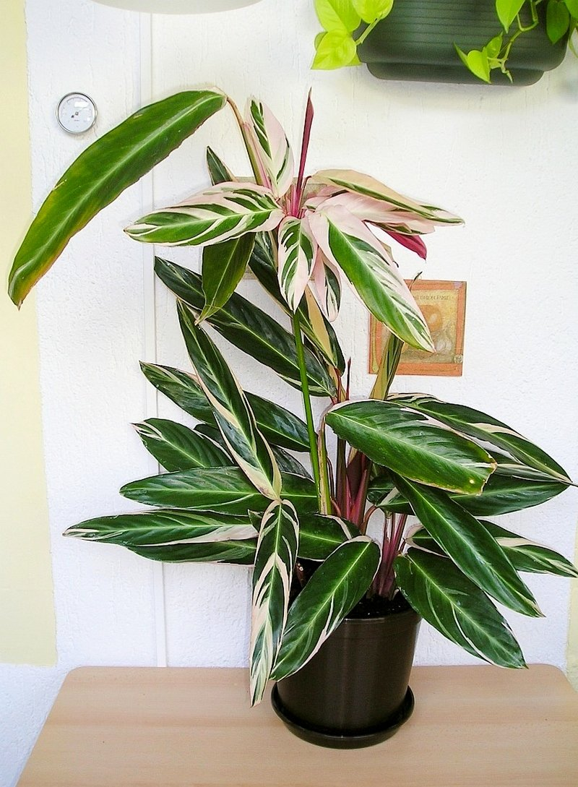

Ктенанта
Описание
Травянистые растения, образующее розетки продолговатых листьев с орнаментом из пятен вдоль жилок. Листья темно-зеленые, изнанка листьев темноокрашенная, пурпурных тонов. Форма листьев — асимметричный эллипс с заострённым кончиком. У некоторых исходных видов листья зелёные, но в культуре распространены пестролистные формы. На поверхности длинных листьев находятся желтые, бледно-зеленые или серебристые полоски, которые несимметрично расходятся от центральной жилки к краям. Листья могут опускаться и подниматься вслед за солнечным светом. Соцветия имеют форму колосков прикрытых плотными прицветниками. От других растений из семейства Марантовые растения рода отличаются более вытянутой формой листовой пластины и более длинными черешками, которые длиннее листа в 2—4 раза.
Галерея

 

Советы по уходу
Требования
Ктенанта является не слишком капризным растением, поэтому, при условии соблюдения правил ее содержания, с цветком под силу будет правиться даже совсем неопытным цветоводам.